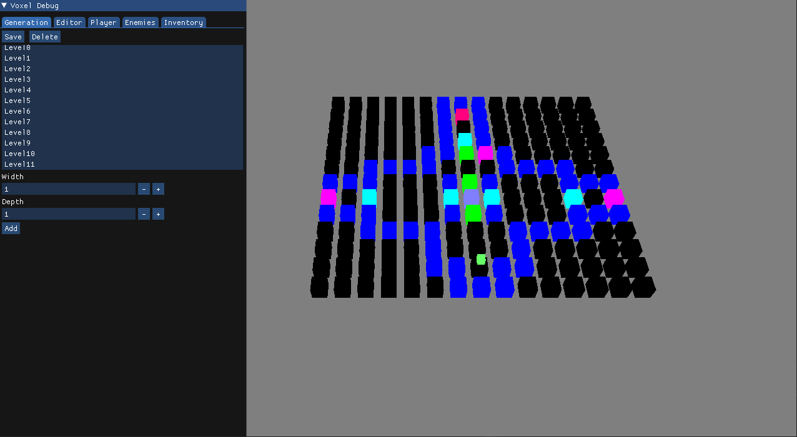

What I did
- Created the starting engine (Fortress Engine)
- Level Editor made in OpenGL that change the same Json file that the PS5 game uses to generate levels
- Level Generation using Json files, fix passes for colour coded doors, levers and pressure plates
- Tile interactions : Door open close, pressure and levers activation of other tiles, pilar object taking...
- Player : Movement, Inventory System
- Enemy : Random Movement, A* movement, Weaknesses, State Machine system
- Flashlight activation, deactivation, battery functionality and interaction with enemies
- Meat : Can be thrown and interacts with some enemies
- Book : Open / Close, adding pages and change of active page
- UI : Simple UI and Text Boxes for narrative
Level Editor
The inventory can store up to four items, but just by changing an integer it would be able to store more or less if that is what we wanted. The objects in the inventory can be a book, a flashlight and a meat.

Inventory & Objects
On the level editor you are able to create and delete levels, apart from changing them. The good thing is that the file that is changed in the level editor is the same file the game uses for then loading the levels. In the level editor you are able to change all tiles into any tile type, having also extra information inside for the movable, pressure and lever tiles. You can also change the player's position, turns and other data, such as the enemies type, position, if it will move when the game starts and escape root (I will talk about this later in the enemies point).
By pressing X the book will open and will let you see the pages that you have collected (starting with only one). It can also be a flashlight, that has x batteries that will be taken out if the flashlight stays active in the enemies turns and can also stunt the golem. And we also have the meat, that can be thrown three tiles away, that will make the curse hunter go into the meat instead of hunting the player.
Interface
The interface in the game are gameobjects that are attached to the camera. We have the players and enemies turns, the inventory, the flashlight battery, the win, lose and pause states, with their texts and also with the controls and credits (in the case of the pause stay).
The object that is in the hand of the player is also an interface object, but it does not use the same shader.
Player
The player has three movements per turn, the movement only counts when it moves to a different tile, so the player can rotate all they want. The player can also interact with pressure plates, levers and pillars, one of them stepping in it, the other pressing the circle. They can also use the inventory objects, and go to the pause menu. The player's mission in the game is to collect pages that will inform them about how to fight the enemies, and go to the end level tile to go to the next level.
Enemies
The enemies hunt the player or scape from it using the A* algorithm. We have four different enemies, the mushling, that will scape to a set position in the level when it sees the player and when he reaches to that point it will stop moving, the golem and the angel that will try hunting the player but one of them can be stop while you look at him and the other is the same but you also need to have the flashlight active, and the last enemy is the curse hunter, that will hunt the player but if there is any meat in the level it will go towards that instead of the player. They can also move randomly, or not move at all, this is always until they see the player, in which case they will hunt or escape.
Grid & Tiles
The grid is generated using a json file that has all the information of the levels. It first creates all the different tiles of the level. After that it generates the player and all enemies, and with that it is capable to create all the interface (it is done this way to do the turns of these entities). Finally, it adds an extra wall on top of the wall types tiles, it rotates the doors and levers to make them be rotated correctly for the level taking in consideration the walls that surrounds those tiles, and it colour coded the doors with the levers and pressure plate that will change the doors states in the future.
Common Tile · This one is the floor tile, it does not have any interactions with the entities.
Movable Tile · The movable tile moves into an empty tile that is adjacent to the movable tile. What it actually does is change the empty tile to a movable tile, and the movable tile into an empty tile, changing the entities position into the new movable tile.
Open Door Tile · The Open Door tile can be changed by other tiles into a closed door, apart from that it acts like a floor tile with a different obj and textures.
Pressure Tile · Is the pressure plate tile, if an entity goes into this tile, it will update the tiles that this tile has inside (different kinds of doors or movable tiles).
End Level Tile · The end level tile is a tile with an open door obj and texture, so that whenever the player enters on it the level will be finished and it will go to the Win State. The enemies are not able to walk into this tile due to them also being able to make the level be finished.
Wall Tile · The Wall Tile is the first tile that the entities are not able to move into. For the checking of the entities if they are able to move into the tiles it checks if the enum is bigger than the wall tile (the order of the tiles here is the same as in the enum).
Empty Tile · It is the same thing as the Wall, with a different obj and textures, with the only difference that the meat is able to go through these tiles.
Closed Door Tile · It is the same thing as the Wall, with a different obj and textures, apart from other tiles being able to turn it into an open door.
Wall With Lever Tile · If the player interacts with it from an adjacent tile it will update the tiles inside the same way as the pressure tile.
Pillar Tile · This is the empty pillar, it is just a wall with different obj and textures.
Pillar With Book / Flashlight / Meat Tile · If this tile is interacted with the same way as a lever, the object will be added into the inventory and the pillar will become an empty pillar.
Pillar With Page Tile · Same thing as the other pillar but instead of adding an object into the inventory it will add a page into the book.